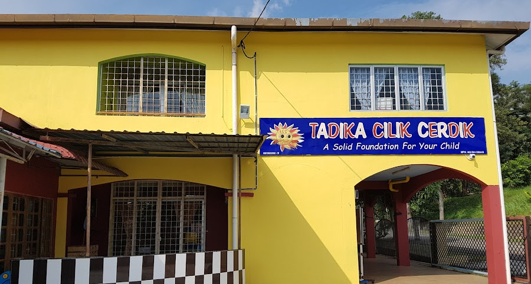
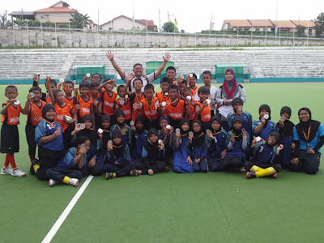

Syazreena Aimi
~stay with me~
EDUCATION TIMELINE

I was five years old when I first entered a school, Tadika Celik Cerdik. It was one of the most exciting yet scary experiences. I learned how to spell and count perfectly in this kindergarten. For the first time, I had many friends and knew a lot of people like the teachers. The kindergarten was near my home but this was not the reason why my parents chose this kindergarten for me. Tadika Celik Cerdik was really a good kindergarten that offered Bahasa Arab class and Abacus class which I also participated in. In 2022, I found out that Tadika Celik Cerdik was closed. image.


I entered Sekolah Kebangssan Taman Tuanku Jaafar 2 for six years from when I was seven years old till 12 years old. I was in the first class from 1st grade until 6th grade. In primary school, there were five classes for each grade so this was the beginning that I felt pressure to get a good result since there were many students to compete with. I became a school prefect in 3rd grade until 6th grade. I joined field hockey club when I was 9 years old and entered several competition with my fellow teammate. We got gold in 2012 and silver in 2013.
I studied at Sekolah Menengah Kebangsaan Taman Tuanku Jaafar for secondary school in 2014. I was a KRK student and my class name was 1 UIA. UIA actually stands for Universiti Islam Antarabangsa. All classes in the schools are related to popular university names. The reason for using the university name was the school wanted their students to dream big to enter such a famous university in the future. I was a science social student who took subjects in chemistry, physics, additional maths and computer science in Form 4.